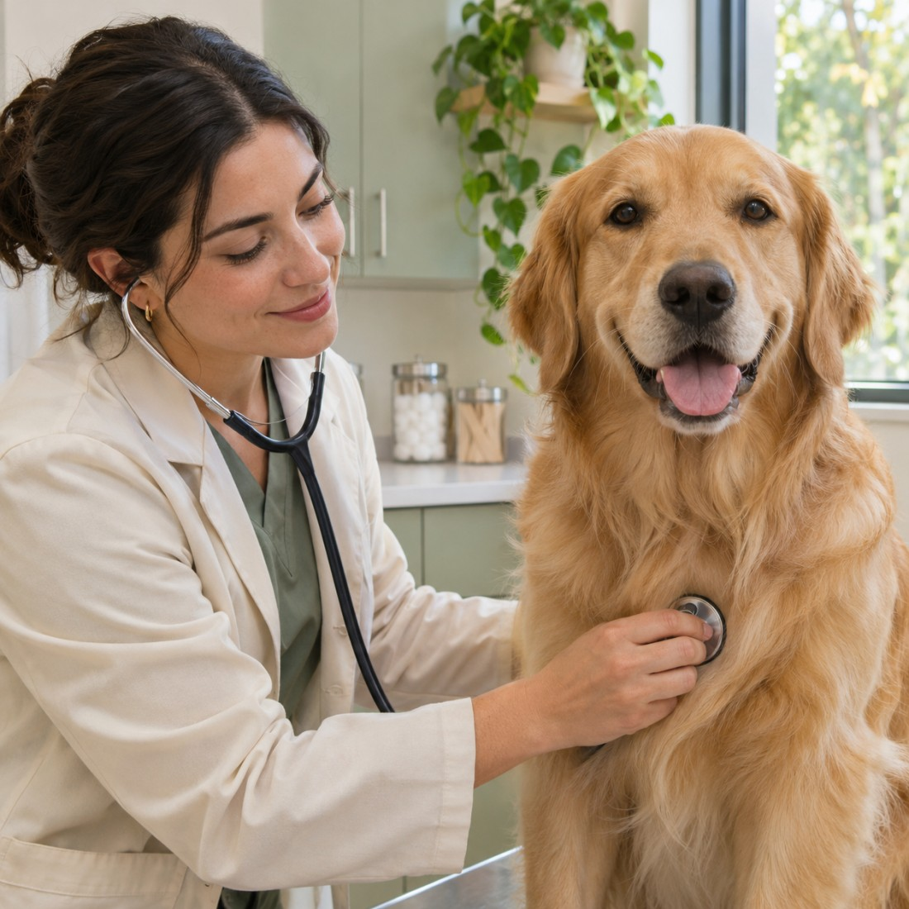
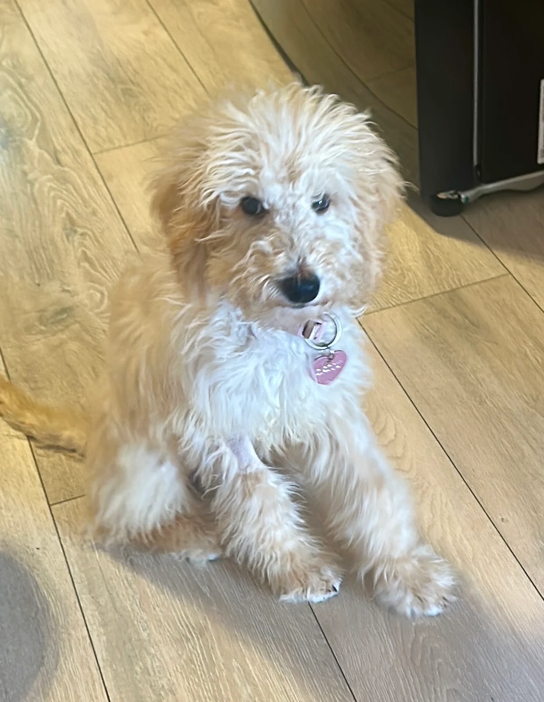
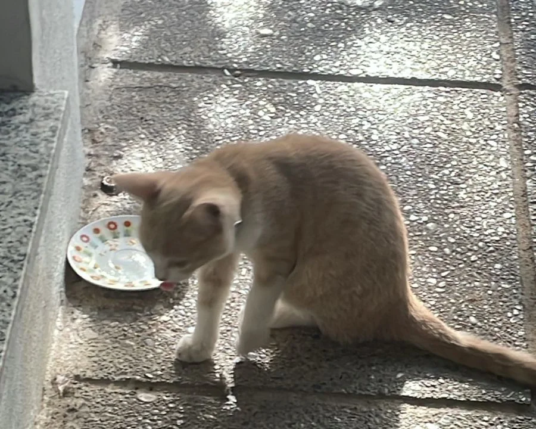

Service placeholder
General consultations
Routine check-ups and assessments of new concerns.
Veterinary clinic · Limassol, Cyprus
Veterinary care starts with understanding what your pet needs. Speak with Nikos Kyriakou Veterinary Clinic in Limassol about your concerns and plan your next visit.
.png)

Every pet has a history worth sharing. Tell the clinic about your pet’s daily routine, any changes you’ve noticed, and what you hope to get from the visit. From a first appointment to a follow-up, those details help start the conversation.

Care for your pet
These suggested service categories are awaiting clinic confirmation. Call to ask what care is available for your pet.
Service placeholder
Routine check-ups and assessments of new concerns.
Service placeholder
Vaccine planning and a review of your pet’s vaccination history.
Service placeholder
Tests and investigations that may help explain a health concern.
Service placeholder
Information about veterinary operations and follow-up care.
Service placeholder
Checks for concerns with teeth and gums, and possible treatment.
Service placeholder
Wellness planning and questions about parasite prevention.
Portrait placeholder
Meet the vet
Dr Nikos Kyriakou is the veterinarian named in the clinic’s Limassol listing. If you’re planning a first visit, call to ask whether the clinic can see your pet and what information to bring.
Biography, qualifications, experience and areas of practice awaiting clinic confirmation.
The visit experience
Proposed topics for the clinic to describe, with examples to be confirmed.
Clinic strength placeholder
Add a clinic-approved example of how the vet explains care options and agrees on next steps with owners.
Clinic strength placeholder
Add the clinic’s confirmed approach to helping pets that find travel or examinations stressful.
Clinic strength placeholder
Add the clinic’s confirmed process for questions, results and follow-up visits.
Testimonials

He saved our dog . 1000000 thanks and we appreciate your support and service during the difficult times
Well done 👍
Amazing veterinary clinic! The Doktor was incredibly kind, professional and helpful. They truly care about their animals and made me feel very comfortable. I highly recommend them! ❤️🐶
The kindest caring people I have had the pleasure to deal with in a long time.My admiration for them is overwhelming

Excellent service.
Saved our kitty cat.
Thank you!!!
Before you visit
A few practical details to have ready before calling or travelling to the clinic.
Call +357 25 771 277. Have your pet’s species, age and reason for the visit to hand. Ask whether you need to book and when the clinic can see you.
If available, bring your pet’s vaccination record, previous veterinary notes and a list of current medicines. Write down when you first noticed any changes and what you’d like to ask.
Species treated are awaiting clinic confirmation. Tell the clinic your pet’s species when you call so staff can advise on availability.
Call to confirm availability. If you have vaccination records, have them nearby when you call.
Phone ahead to check whether the clinic can see your pet promptly. If you can’t reach the clinic or it can’t see your pet, contact an available emergency veterinary provider. After-hours arrangements are awaiting clinic confirmation.
Opening hours are awaiting clinic confirmation. Call before travelling, especially on weekends and public holidays.
The listed address is Agias Fylaxeos 294D, 3117 Limassol. Open the map for directions and call ahead for parking or access information.
Contact & directions
Call to discuss what your pet needs and check appointment availability before you travel.
Nikos Kyriakou Veterinary ClinicOpening hours, walk-in policy, parking and after-hours arrangements are awaiting clinic confirmation.